Pollo
139.571 vendidos/mes Mantiene los músculos fuertes.
Mantiene los músculos fuertes.- Favorece un pelaje sano y brillante.
 Contiene una sola fuente de proteína.
Contiene una sola fuente de proteína.

Ideal para perros que necesitan controlar su peso
Con un 60 % de buey y un 40 % de zanahoria, patata y otras verduras. Elaborado según las recomendaciones nutricionales de la FEDIAF y solo con ingredientes naturales.
139.972 menús vendidos este mes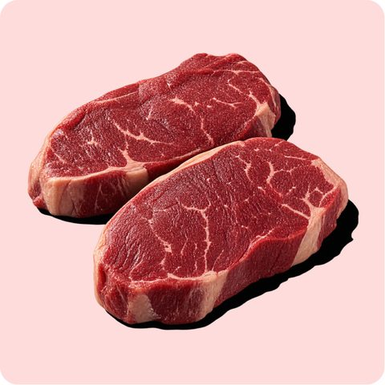
Proteína de calidad que mejora el crecimiento muscular, el pelaje y aporta energía.
*Asadura 48,6 %, carne 6,9 %, bazo 2,7 % e hígado 2,3 %.
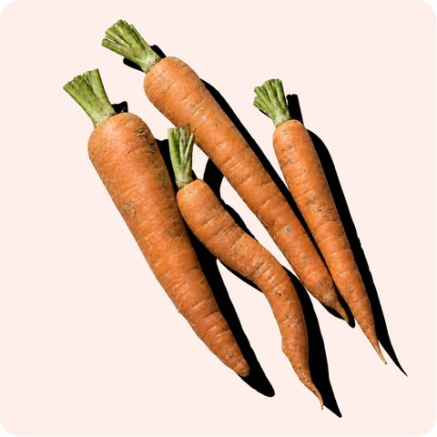
Fibra y vitamina A para cuidar sus defensas, su piel y su pelo. Una hortaliza con mucho que aportar.
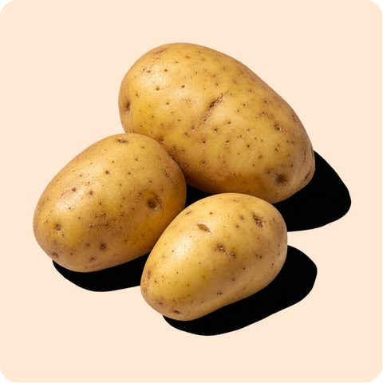
Energía para sus aventuras de cada día, fibra para su digestión y antioxidantes. Todo eso cabe en una patata.
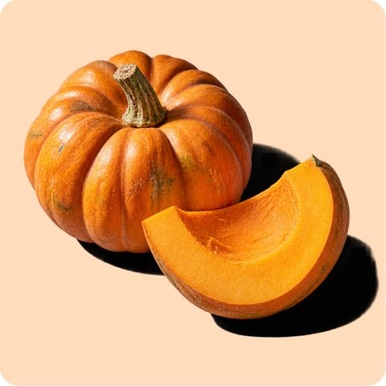
Llena de vitamina A y antioxidantes que ayudan a cuidar sus defensas. Tan rica como suena.
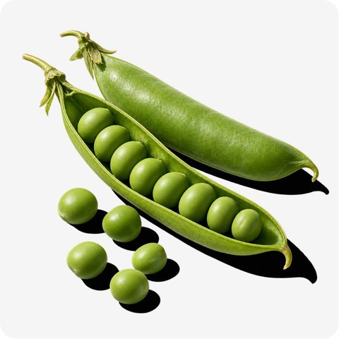
Pequeños, pero con mucho dentro: fibra y proteína que ayudan a cuidar su microbiota y mantener sus músculos.
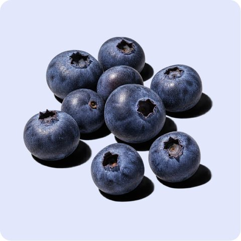
Antioxidantes naturales y vitamina C para ayudar a cuidar sus defensas. Un toque de sabor que les encanta.
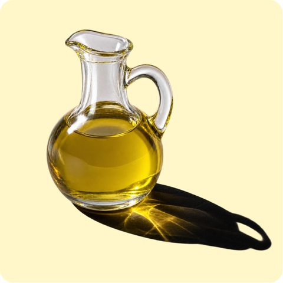
Grasas esenciales que aportan energía y ayudan a mantener su pelo sano y brillante.
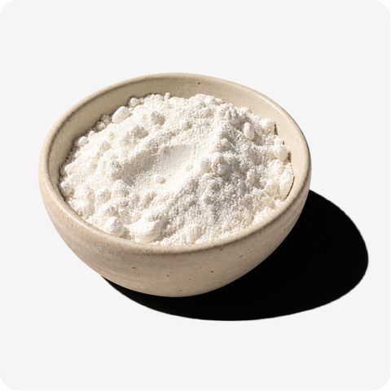
Ayuda a dar consistencia a la receta para disfrutar de su sabor y textura en cada bocado.
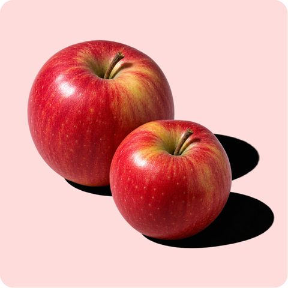
Fibra natural para cuidar el equilibrio de su microbiota intestinal y ayudar a que sus cacas tengan una buena consistencia.
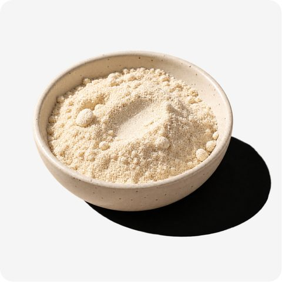
En pequeñas cantidades, con un gran papel: ayudar a que su cuerpo funcione bien y cuidar su bienestar cada día.
| Peso del perro | Cantidad diaria orientativa |
|---|---|
| 5 kg | 190 g |
| 10 kg | 320 g |
| 15 kg | 430 g |
| 20 kg | 540 g |
| 30 kg | 730 g |
| 40 kg | 900 g |
Cantidades orientativas para un perro adulto con actividad moderada. Al crear su plan calculamos su ración exacta.
«Estoy muy feliz con ellos. ¡Ya no volveremos al pienso nunca!»
«Ninguna comida le gustaba a mi perro hasta que ha probado esta.»
«La mejor decisión que pude hacer por mi perra.»
«A mi dogo argentino le encanta la comida, va a comer más contento que nadie.»
«Es una maravilla verlos disfrutar así de su comida.»
«Muy contenta con su producto. A mi perro le sienta genial.»
«A mi perrita Suri le encanta, se lo come en un pispás.»
«Mi perro y yo estamos muy contentos con la comida.»
Mantiene los músculos fuertes.Contiene una sola fuente de proteína.
 Ideal para hocicos refinados.Ayuda a fortalecer la salud ósea.
Ideal para hocicos refinados.Ayuda a fortalecer la salud ósea.
 Ideal para estómagos sensibles.Contiene una sola fuente de proteína.
Ideal para estómagos sensibles.Contiene una sola fuente de proteína.Los perros, al igual que los humanos, necesitan un equilibrio adecuado de nutrientes para mantener su salud. Su dieta debe incluir una combinación adecuada de proteínas, grasas, vitaminas y minerales.
Hacer el cambio poco a poco ayuda a que su estómago se adapte. Con el primer pedido recibes una guía de transición para los primeros días.
La ración depende de su peso, su edad y su actividad. Te explicamos cómo calcularla y por qué cada perro necesita una cantidad distinta.
FAQs
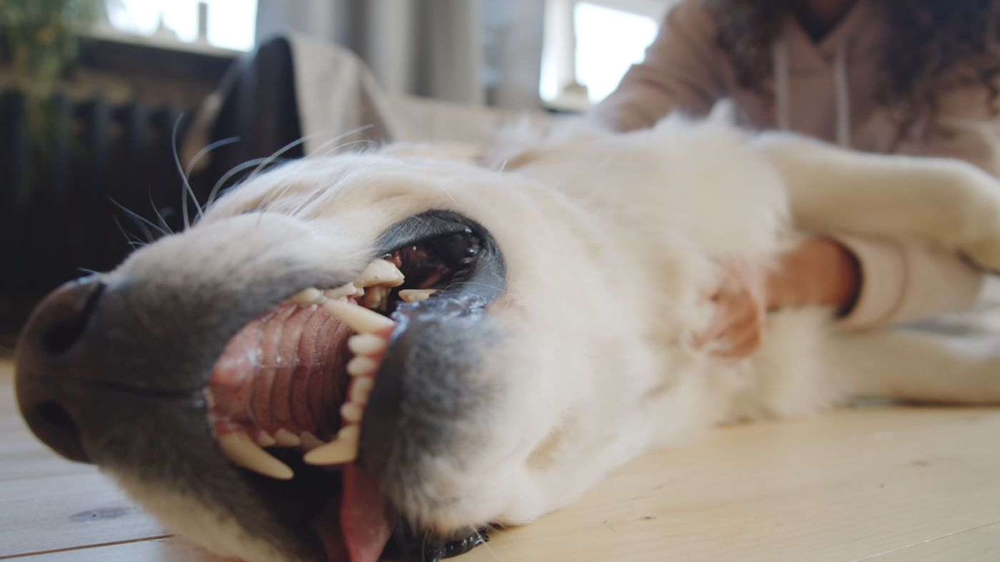